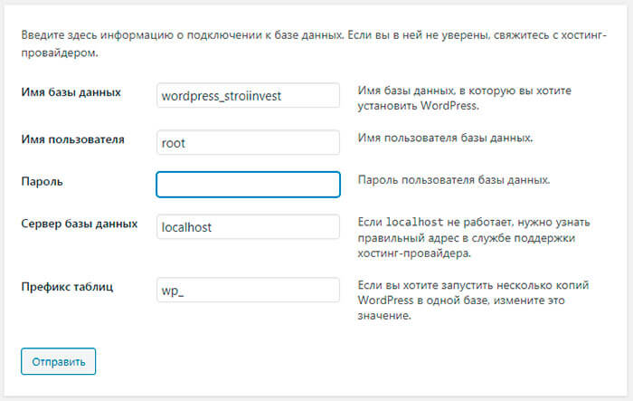

Чтобы начать работать с wordpress нужно иметь локальный сервер на компьюторе. У меня уже есть OpenServer. Теперь нужно скачать сам установщик wordpress c сайта.
Затем открываем архив и копируем всё содержимое в папку, которой дадим, например, имя wordpress.local(говорят нужна папка в названии которой есть точка) на нашем лок. сервере, а в этой папке надо создать папку www, и уже в эту папку вставляем содержимое архива. У меня это путь D:\OpenServer\OSPanel\domains\wordpress.local\www. Перед запуском в браузере, заходим в openServer во вкладку "домены" и там нужно указать нашу папку и имя домена. Всё, в браузере вводим название домена - http://wordpress.local. Вылетает табличка с языками, выбираем свой язык, и затем появится предупреждение о том, что перед установкой wordpress нужны кое какие данные о БД:
Пишем такие настройки, только имя БД должно быть то, какую БД мы создадим для нового сайта под вордпресс.
Далее можно посмотреть по этому видео:
После того как мы зарегестрировали для вордпресса базу данных и ввели логин, пароль и почту мы попадём в админку вордпресса. Админка находится по урлу http://wordpress.local/www/admin.